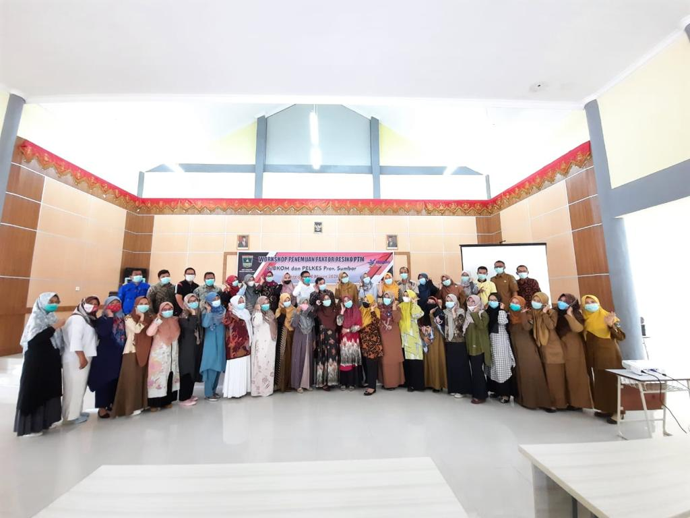

My Gallery
RIWAYAT JABATAN
- Kabid. Pelayanan Medik Direktorat Medik dan Keperawatan
- Kabid. Pelayanan Medik dan Keperawatan
RIWAYAT PENDIDIKAN FORMAL
- SD 10 Negeri Padang Panjang (1980)
- SMPN 1 Padang Panjang (1983)
- SMAN 1 Padang Panjang (1986)
- Fakultas Kedokteran Universitas Andalas Padang (1993)
- Sp-1 Universitas Indonesia, Program studi : Ilmu Kesehatan THT (2004)
- Sp-2 Universitas Indonesia, Konslutan Rhinologi (2014)
- S-3 Universitas Andalas, Program studi: Biomedik (2018)

RIWAYAT PELATIHAN / SEMINAR / WORKSHOP
- Pelatihan Etik Dasar-Lanjut Penelitian Kesehatan
- Bimbingan Teknis Sertifikasi Ahli Pengadaan Barang dan Jasa
SIMPOSIUM/SEMINAR DALAM DAN LUAR NEGERI
- 20th World Congres Of The International Federation of (2013)

GOOGLE SCHOLAR
- Faktor Risiko Non Viral pada Karsinoma Nasofaring (2015)
- Epistaksis dan Hipertensi: Adakah Hubungannya? (2012)
- Expression of epidermal growth factor receptor in advance stage nonkeratinizing nasopharyngeal carcinoma in West Sumatra, Indonesia (2018)
- Bedah Sinus Endoskopi Fungsional Revisi Pada Rinosinusitis Kronis (2013)
- PENGARUH SEPTOPLASTI TERHADAP SUMBATAN HIDUNG (2015)
- Pengukuran Sumbatan Hidung pada Deviasi Septum Nasi (2012)
- ALL